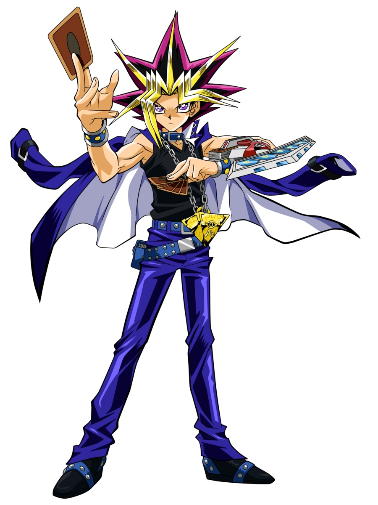
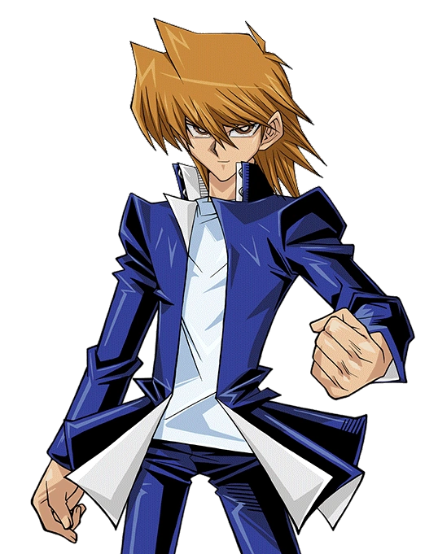

This week's top duelist will be present.
Yugi Muto brings his Dark Magician to new heights!

Becoming the "King of Games":
Yugi first earned this title by defeating the reigning champion, Seto Kaiba, with Exodia the Forbidden One in their first duel.
Winner of the Duelist Kingdom Tournament:
He triumphed in Maximillion Pegasus's tournament, winning the grand prize money (which he gave to Joey for his sister's eye surgery) and, most importantly, freeing the souls of his grandfather and the Kaiba brothers.
Winner of the Battle City Tournament:
Yugi emerged as the champion of this major tournament, acquiring all three Egyptian God Cards (Slifer the Sky Dragon, Obelisk the Tormentor, and The Winged Dragon of Ra) and defeating the main antagonist Yami Marik in the finals.
Defeating the Pharaoh:
In the final "Ceremonial Duel", Yugi faced the spirit of Atem in a climactic battle to help the Pharaoh's soul move on to the afterlife. Yugi won this duel on his own, proving he was a master duelist fully worthy of the "King of Games" title.
Joey Wheeler, a 3rd rate duelist with a 4th rate deck.

Runner-up in the Duelist Kingdom Tournament:
Joey advanced to the finals of Maximillion Pegasus's tournament, ultimately losing to Yugi in a close match but securing the prize money for his sister's eye surgery.
Top 4 Finalist in the Battle City Tournament:
He reached the semi-finals, placing fourth overall. He very nearly defeated the main antagonist Marik Ishtar in a shadow game, only collapsing from Marik's shadow magic right before delivering the final attack.
Acquisition of Powerful Cards:
He won iconic cards through duels, most notably the Red-Eyes Black Dragon from Rex Raptor during Duelist Kingdom and Jinzo from Espa Roba in Battle City.
Wielder of a Legendary Dragon:
During the Waking the Dragons arc, Joey was chosen to wield one of the three legendary dragon cards, The Claw of Hermos, a testament to his character and dueling spirit.
Ranked as a Top Duelist:
Maximillion Pegasus himself ranked Joey as the third-best duelist he had ever seen, behind only Yugi Muto and Seto Kaiba.